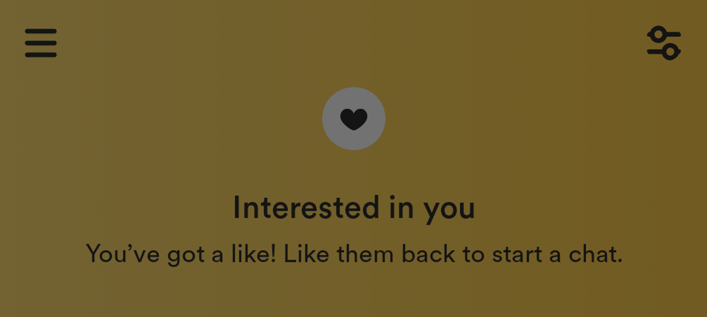
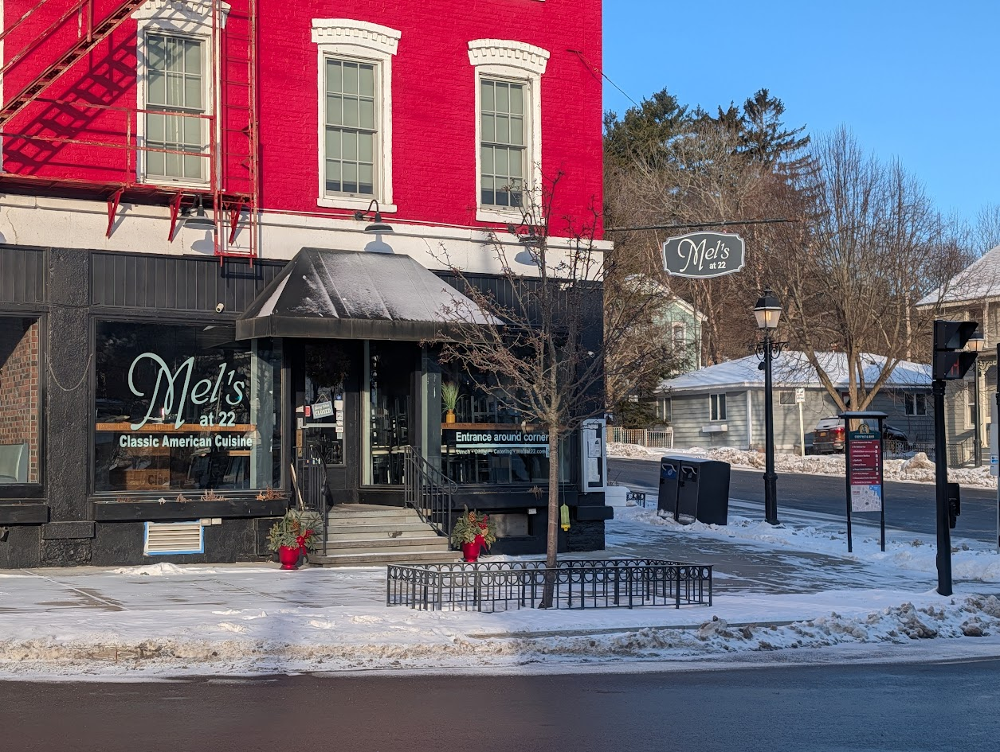
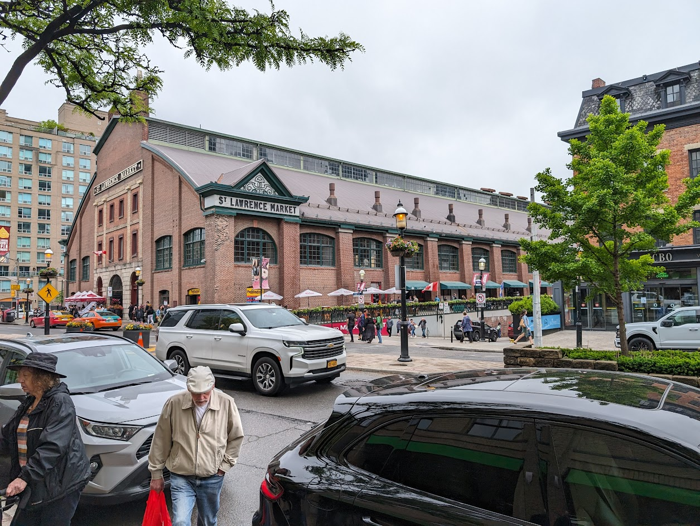
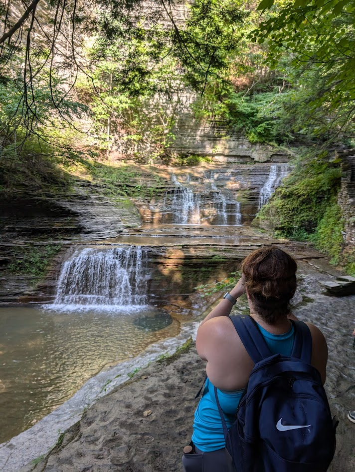
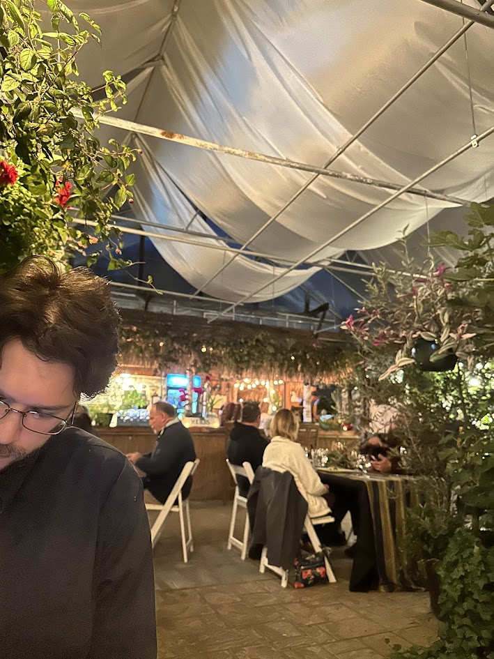
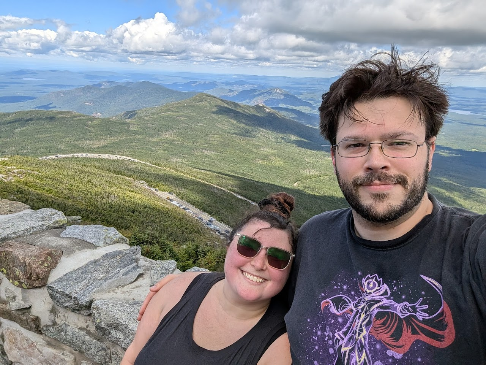
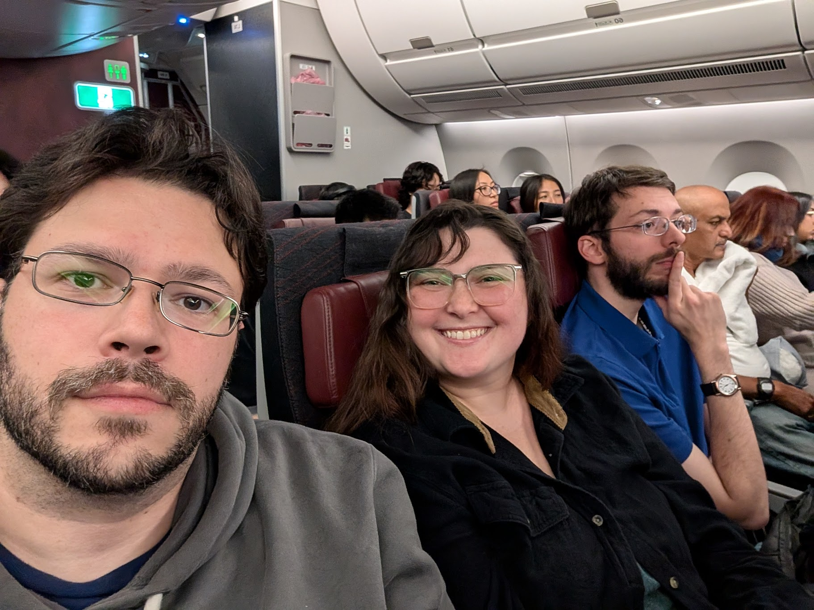
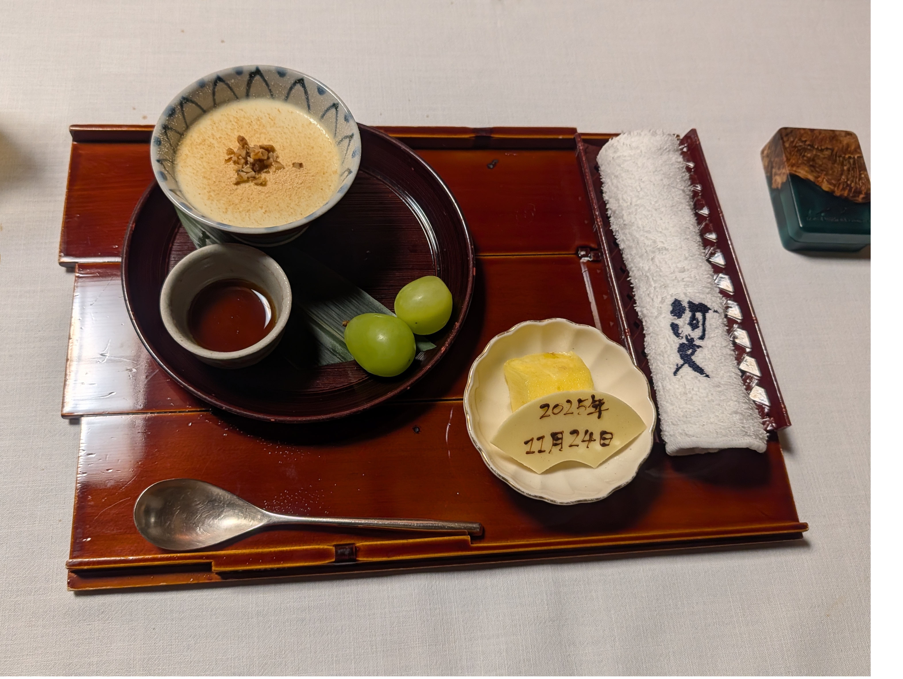

Our Story
At First Sight — By Brianna
We match on Bumble, the dating app, and begin talking.

First date at Mel's at 22 restaurant, it was snowing and cold.

Second date at the movies seeing Madam Web and Sushi dinner after.
Third date at Jeremy's house, dinner in and talking.
Fourth date at Southern Girl Diner in Dolgeville for lunch. We became an official couple.
Road tripped to Toronto, Canada for a convention and had a blast!

Went camping in Ithaca, NY and hiked multiple trails.

Date night at Origin's restaurant in Cooperstown. The night we both planned to tell the other "I love you" for the first time.

Our first Thanksgiving, Christmas, and New Year's together.
Brianna and Marley move in with Jeremy and Penguin.
Went camping in Wilmington, NY and hiked Whiteface Mountain.

Left for trip to Japan! It was a really long flight.

He proposed! She said yes!

Spent eating KFC in Japan.
Our second Christmas and New Years together.
Many more memories to make